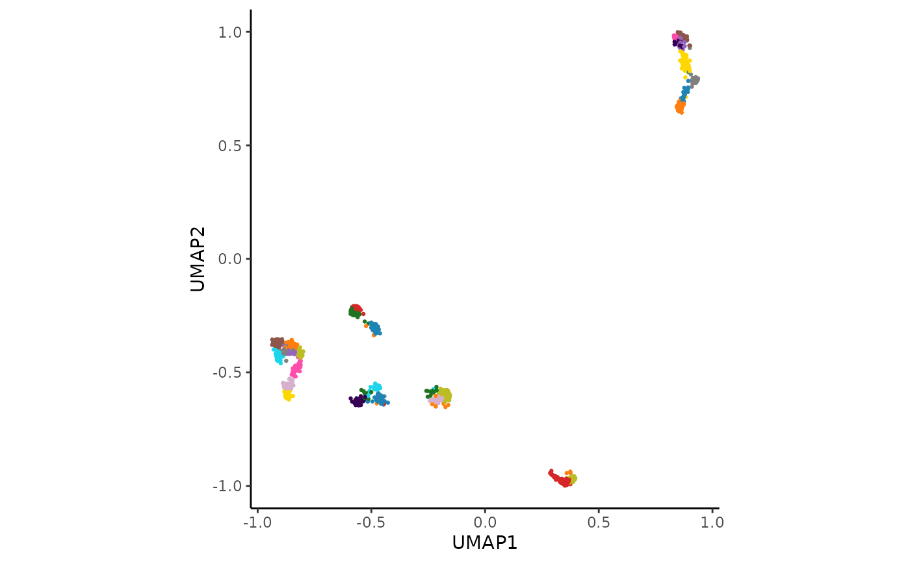

hc_auto_cluster performs a full clustering pipeline on an AnnDataR object,
including PCA, distance calculation, SNN graph construction, consensus clustering,
UMAP embedding, and cluster hull generation. It prints a UMAP plot of the
resulting clusters.
Usage
hc_auto_cluster(
AnnDatR,
layer = NULL,
pca_components = 50,
pca_transform = "log1p",
distance_components = NULL,
distance_method = "spearman",
snn_neighbors = 20,
snn_similarity = "euclidean",
cluster_resolution = 6,
cluster_method = "louvain",
verbose = TRUE
)Arguments
- AnnDatR
An AnnDataR object.
- layer
Optional layer name within the AnnDatR object to use instead of the default data.
- pca_components
Number of principal components to compute (default is 50).
- pca_transform
Data transformation method to apply before PCA. Options are "log1p", "sqrt", or "none" (default is "log1p").
- distance_components
Number of principal components to be used. If NULL, uses Kaiser’s rule to determine the number of components.
- distance_method
Distance metric to use (default is 'spearman'). This must be one of "euclidean", "maximum", "manhattan", "canberra", "binary", "minkowski", "pearson", "spearman" or "kendall".
- snn_neighbors
Number of nearest neighbors to consider (default is 20).
- snn_similarity
Distance metric to use for nearest neighbor search (default is "euclidean"). Other options include "cosine", "manhattan", and "hamming".
- cluster_resolution
Resolution parameter for clustering (default is 6).
- cluster_method
Clustering method to use: "louvain" (default) or "leiden".
- verbose
Logical indicating whether to print progress messages (default is TRUE).
Value
An AnnDataR object with clustering and intermediate results added. The UMAP plot of the clusters is also printed.
Examples
adata_res <- hc_auto_cluster(example_adata, cluster_resolution = 8)
#> [1] "Kaiser's rule is above 80% variation. Success"
#> Found more than one class "dist" in cache; using the first, from namespace 'BiocGenerics'
#> Also defined by ‘spam’
#> Found more than one class "dist" in cache; using the first, from namespace 'BiocGenerics'
#> Also defined by ‘spam’
#> Building SNN based on a provided distance matrix
#> Computing SNN
#> Iteration: 0 *** value: 947.234
#> Iteration: 1 *** value: 212.952
#> Iteration: 2 *** value: 42.2765
#> Iteration: 3 *** value: 22.1534
#> Iteration: 4 *** value: 22.1534
#> Minimum: 22.1534
#> Joining with `by = join_by(cons_cluster)`
#> The 'umap-learn' Python package is not installed. Installing it now...
#> Using virtual environment '/home/runner/.virtualenvs/r-reticulate' ...
#> + /home/runner/.virtualenvs/r-reticulate/bin/python -m pip install --upgrade --no-user umap-learn

head(adata_res$uns$consensus_clustering)
#> # A tibble: 6 × 2
#> gene cluster
#> <chr> <chr>
#> 1 ENSG00000002745 30
#> 2 ENSG00000004660 6
#> 3 ENSG00000006047 29
#> 4 ENSG00000006059 27
#> 5 ENSG00000006453 22
#> 6 ENSG00000006740 6